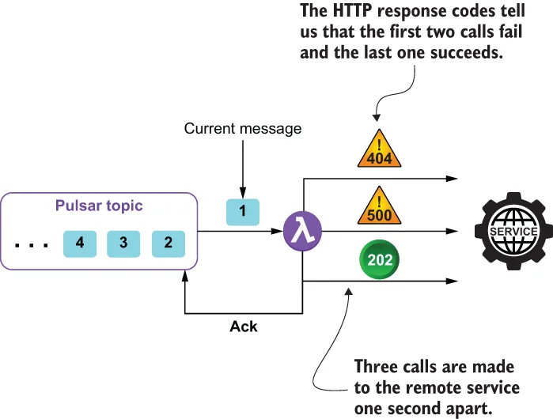

When communicating with a remote service, any number of transient faults may occur, including a loss of network connectivity, the temporary unavailability of a service, and service timeouts that can occur when the remote service is extremely busy. These types of faults are generally self-correcting, and subsequent calls to the service are likely to succeed. If you encounter such a failure inside your Pulsar function, then the retry pattern allows you to handle the failure in one of three ways, depending on the error; if the error indicates that the failure isn’t transient in nature, such as an authentication failure due to bad credentials, then you should not retry the call, since the same failure is likely to occur.
在与远程服务通信时，可能会发生任意数量的瞬时故障，其中包括网络连接中断、服务暂时不可用，以及当远程服务极度繁忙时所出现的服务超时。这类故障通常都是会自行恢复的，后续对该服务的调用很可能会成功。如果你在自己的 Pulsar 函数中遇到了这样的失败，那么重试（retry）模式允许你依据错误的性质，以三种方式之一来处理这次失败：如果该错误表明这次失败并非瞬时性的，例如因凭据错误而导致的认证失败，那么你就不应当重试这次调用，因为同样的失败很可能会再次发生。
If the exception indicates that the connection either timed out or otherwise indicates that the request was rejected due to the system being busy, then it is best to wait for a period of time before retrying the call to allow the remote service time to recover. Otherwise, you may want to retry the call immediately, since you have no reason to believe the subsequent call will fail. In order to implement this type of logic inside your function, you will need to wrap the remote service call inside a decorator, as shown in the following listing.
如果该异常表明连接超时了，或者以其他方式表明请求是因为系统繁忙而被拒绝的，那么最好先等上一段时间再重试这次调用，好让远程服务有时间恢复。除此之外的情况，你可能希望立刻重试这次调用，因为你没有理由相信后续那次调用会失败。为了在自己的函数内部实现这类逻辑，你需要把远程服务调用包在一个装饰器（decorator）里面，如下面清单所示。
Listing 9.3 Utilizing the retry pattern inside a Pulsar function
import io.github.resilience4j.retry.Retry;
import io.github.resilience4j.retry.RetryConfig;
import io.github.resilience4j.retry.RetryRegistry; ❶
import io.vavr.CheckedFunction0;
import io.vavr.control.Try;
public class RetryFunction implements Function<String, String> {
public String apply(String s) { ❷
RetryConfig config =
RetryConfig.custom() ❸
.maxAttempts(2) ❹
.waitDuration(Duration.ofMillis(1000)) ❺
.retryOnResult(response -> (response == null)) ❻
.retryExceptions(TimeoutException.class) ❼
.ignoreExceptions(RuntimeException.class) ❽
.build();
CheckedFunction0<String> retryableFunction =
Retry.decorateCheckedSupplier(
RetryRegistry.of(config).retry("name"), ❾
() -> { ❿
HttpGet request =
new HttpGet("http://www.google.com/search?q=" + s);
try (CloseableHttpResponse response =
HttpClients.createDefault().execute(request)) {
HttpEntity entity = response.getEntity();
return (entity == null) ? null : EntityUtils.toString(entity);
}
});
Try<String> result = Try.of(retryableFunction); ⓫
return result.getOrNull(); ⓬
}
}
❶ We rely on several classes within the resilience4j library.
❶ 我们依赖 resilience4j 库中的若干类。
❷ This is the method defined in the function interface that will be invoked for each message.
❷ 这是函数接口中所定义的方法，每来一条消息就会被调用一次。
❸ Create our own custom retry configuration.
❸ 创建我们自己的定制重试配置。
❹ Specifies a maximum of two retry attempts
❹ 指定最多两次重试尝试。
❺ Specifies a pause of one second between retries
❺ 指定两次重试之间暂停一秒。
❻ Perform a retry if the returned result is null.
❻ 如果返回结果为 null，就执行一次重试。
❼ Specifies the list of exceptions that are treated as transient faults and retried
❼ 指定被视为瞬时故障并予以重试的异常列表。
❽ Specifies the list of exceptions that are treated as non-transient and not retried
❽ 指定被视为非瞬时故障且不予重试的异常列表。
❾ Decorate the function with our custom retry configuration.
❾ 用我们定制的重试配置来装饰这个函数。
❿ Provide the lambda expression that will be executed and retried if necessary.
❿ 提供那个将被执行、并在必要时被重试的 lambda 表达式。
⓫ Execute the decorated function until a result is received or the retry limit is reached.
⓫ 执行这个被装饰过的函数，直到拿到结果或达到重试上限。
⓬ Return the result or null if no response was received.
⓬ 返回结果；如果没收到响应，则返回 null。
The code shown in listing 9.2 simply takes as input a string, calls the Google search API with the given input string, and returns the result. Most importantly, it will make multiple attempts to call the HTTP endpoint without having to negatively acknowledge the message and have it redelivered to the function. Instead, the message is delivered from the Pulsar topic just once, and the retries are all made within the same call to the Pulsar function’s apply method, as shown in figure 9.6. This allows us to avoid the wasteful cycle of having the same message delivered multiple times before deciding to give up on the external system.
清单 9.2 中所示的代码做的事情很简单：接收一个字符串作为输入，用该输入字符串去调用 Google 搜索 API，然后返回结果。最重要的是，它会对那个 HTTP 端点发起多次尝试，而不必去否定确认该消息、让它被重新投递给函数。相反，这条消息只从 Pulsar 主题被投递一次，而所有重试都发生在对 Pulsar 函数 apply 方法的同一次调用之内，如图 9.6 所示。这让我们得以避开那种浪费的循环——在决定放弃这个外部系统之前，把同一条消息反复投递多次。

Figure 9.6 When using the retry pattern, the remote service is called repeatedly with the same message. In this particular case, the first two calls fail, but the third one succeeds, so the message is acknowledged. This allows us to avoid having to negatively ack the message and delay the processing by one minute each time.
图 9.6 使用重试模式时，远程服务会被用同一条消息反复调用。在这个具体的例子中，前两次调用失败，但第三次成功，于是该消息被确认。这让我们得以避免不得不否定确认该消息、并每次都把处理延迟一分钟。
The first parameter passed into the Retry.decorateCheckedSupplier method is the retry object we configured earlier in the code, which defines the number of retry attempts to make, how long to pause between them, and which exceptions indicate that we should retry the function call and which ones indicate we should not.
传入 Retry.decorateCheckedSupplier 方法的第一个参数，是我们在代码前面所配置的那个 retry 对象，它定义了：要进行多少次重试尝试、两次之间暂停多久，以及哪些异常表示我们应当重试这个函数调用、哪些又表示不应当重试。
For those of you not familiar with the use of lambda expressions inside Java, the actual logic that will be called is encapsulated inside the second parameter, which takes in a function definition, as indicated by the ()-> syntax, and includes all the code inside the following brackets. The resulting object is a decorated function that is then passed into the Try.of method, which handles all of the retry logic automatically for you. The term decorated comes from the decorator pattern, which is a well-known design pattern that allows behavior to be dynamically added to an object runtime.
对于不熟悉 Java 中 lambda 表达式用法的读者：真正会被调用的那段逻辑，被封装在第二个参数里——它接收一个函数定义，由 ()-> 语法所标识，并包含随后花括号内的所有代码。由此得到的对象是一个被装饰过的函数，它随后被传入 Try.of 方法，而该方法会替你自动处理全部重试逻辑。装饰（decorated）这个术语来自装饰器模式，那是一个广为人知的设计模式，它允许在对象运行时动态地为其添加行为。
While you could have implemented similar logic using a combination of try/catch statements and a counter for the number of attempts, one can easily argue that the decorated function approach provided by the resilience4j library is a much more elegant solution which also allows you to dynamically configure the retry properties via user configuration properties provided when the Pulsar function is deployed.
虽然你本可以用 try/catch 语句加上一个尝试次数计数器来实现类似的逻辑，但人们很容易认同：resilience4j 库所提供的这种"装饰函数"做法是优雅得多的解决方案，它还让你能够通过部署 Pulsar 函数时所提供用户配置属性，来动态地配置重试相关的各个属性。
Issues and considerations
问题与考量
While this is a very useful pattern to use when interacting with an external system, such as a web service or a database, be sure to consider the following factors when implementing it inside your Pulsar function:
虽然在与外部系统（例如 Web 服务或数据库）交互时，这是一个非常有用的模式，但在自己的 Pulsar 函数中实现它时，务必考虑以下这些因素：
Adjust the retry interval to match the business requirements of your application. An overly aggressive retry policy with very short intervals between retries could generate additional load on a service that is already overloaded, making matters even worse. One might want to consider using an exponential backoff policy that increases the time between the retries in an exponential manner (e.g., 1 sec, 2 sec, 4 sec, 8 sec, etc.).
把重试间隔调整到与你应用的业务需求相匹配。过于激进、两次重试之间间隔极短的重试策略，会给一个本已过载的服务带去额外的负载，让情况变得更糟。可以考虑采用指数退避策略，即以指数方式拉长两次重试之间的时间（例如 1 秒、2 秒、4 秒、8 秒等等）。
Consider the criticality of the operation when choosing the number of retries to attempt. In some scenarios it may be best to fail fast rather than impact the processing latency with multiple retry attempts. For a customer-facing application, for example, it is better to fail after a small number of retries with a short delay between them than to introduce a lengthy delay to the end user.
在选择重试次数时，要考虑该操作的关键程度。在某些场景下，快速失败可能好过用多次重试去拖累处理延迟。举例来说，对于一个面向客户的应用，宁可在少量几次重试（彼此间隔很短）之后就失败，也不要给最终用户引入一段漫长的延迟。
Be careful when using this pattern on operations that are idempotent; otherwise you might experience unintended side effects (e.g., a call made to an external credit card authorization service that is received and processed successfully but fails to send a response). Under these circumstances, if the retry logic sends the request again, the customer’s credit card would be charged twice.
在幂等的操作上使用这个模式时要格外小心，否则你可能会遭遇意料之外的副作用（例如：一次对外部信用卡授权服务的调用被成功接收并处理了，却没能发出响应）。在这种情况下，如果重试逻辑把该请求再发一遍，客户的信用卡就会被扣两次款。
It is important to log all retry attempts so the underlying connectivity issues can be identified and corrected as soon as possible. In addition to regular log files, Pulsar metrics can be used to communicate the number of retry attempts to the Pulsar administrator.
把所有的重试尝试都记录下来是很重要的，这样底层的连接问题才能被尽快发现和纠正。除了常规的日志文件之外，还可以用 Pulsar 指标把重试尝试的次数传达给 Pulsar 管理员。